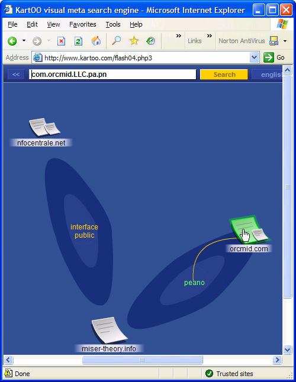
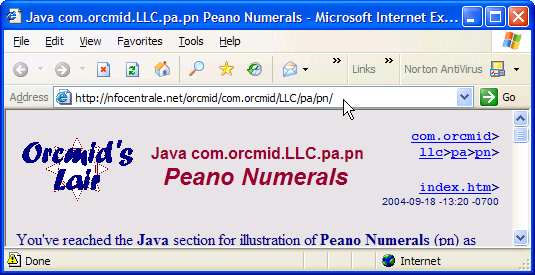
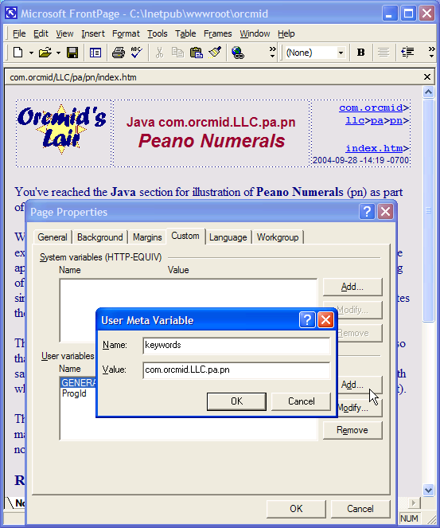

Java Project
J040602
com.orcmid.LLC.pa.pn ALPHA Organization
Situating Peano Numeral
com.orcmid>
LLC>pa>pn>
ALPHA>
J040602c>
0.10 2022-05-06-12:10 -0700
|
|
Java Project
J040602 |
|
The com.orcmid.LLC.pa.pn package structure is situated in space and time by the establishment and maintenance of a physical (real: manifest in space and time) organization of authoritative material. The package hierarchy is projected on that material, including the compilation units for implementation and demonstration of the package. That has been addressed in the notes on Package Projection where we have identified:
- The few organizational requirements that the Java Language Specification places on package names [1]
- The projection of package structure onto file-system class paths so that package compilation units can be accessed successfully and also installed (cached or mirrored) in a way that has them be usable.
- The management of the versions of package materials, including compilation units and web pages, using source-control software (in our case, Visual SourceSafe 6.0)
- The provision of all essential information in an authoritative hierarchy of web-site pages.
We now want to consider other ways that material created is anchored and its provenance established. Here we build on ideas introduced in in the experimentation with compiling [J040603c: 4.1].
The idea is that whatever form we encounter the material in, we can trace it to its origins, comprehend its context, and discover any additional information that is available. In some circles, this is referred to as metadata. We are not going to worry about what it is so much as what it provides: situation of the material in information contexts in such a way that there is some solid ground for the package com.orcmid.LLC.pa.pn as the implementation of something understandable.
We're depending on a remarkable degree of tacit knowledge, despite this obsessive articulation of minutiae.
1. Overview
2. Web Search
2.1 Searching for com.orcmid.LLC.pa.pn
2.2 Encouraging Focus on Authoritative Materials
3. Location by Navigation
4. Weaving the Situation of Peano Numeral Material
5. References
The first questions we address are those of the following kind:
- If I have a mention of com.orcmid.LLC.pa.pn, can I find the material associated with it?
- Can I discover an authoritative source?
The answer is yes, for the Internet. Standard search methods can be used to locate the authoritative material. We can also exercise measures to increase the likelihood of the material being found as the result of a Web search. This is expanded in section 2, Web Search.
We can also locate the material by navigation (section 3). Knowing the nature of Java package names, we have some clues that we could discover something about the material by exploring the domain names that are implicit in the package names.
These two forms of access depend upon a fair amount of tacit understanding. There is some degree to which the searcher knows what is being sought and that the key is (likely to be) a Java package name.
The remaining case has to do with explicitly tying material to its authoritative source. First by packaging (as in a Zip file or at a web location) and by links incorporated in the material itself. That way, packages carry descriptions (or manifests) of their material and the items themselves provide connections to their packages and authoritative information about them (section 4).
One way to uncover an association of the package name and material about it is by searching. The package name can be a powerful way to locate information about the use of and the authoritative material about the package.
2.1.1 The term "com.orcmid.LLC.pa.pn" can be used as a search phrase for locating Peano Numeral information on the World Wide Web:
Fig. 2-1: Typical Search for the package2.1.2 The phrase itself (in quotations if necessary to avoid confusion with a URL) works as a search term. Search engines already (2004-09-28) deliver access to definitive materials about Peano Numeral (and the abstract approach of Numbering Peano):

Fig. 2-2: Principle Query-Result Clusters2.1.3 Searches already find links to the three contexts in which the Peano Numeral package is discussed:
- The Numbering Peano source of commentary and speculations about interface contracts, problem space versus solutions space, and so on
- The Miser Theory Numbering-Peano Project with its abstract view of how computational abstractions are manifest using interfaces to programming-system objects
- The Java Peano Number package and its authoritative material

Fig. 2-3: The Authoritative Location on the Web (via search result)
2.2.1 Some web searches can be guided by introducing search-system metadata on the key location or page:

Fig. 2-4: Using Meta Variables to Improve Search2.2.2 For comparison, we can make a search with Google to see how its page-ranking scheme responds to the uses we have established for the package name.
Fig. 2-5: Searching for Quoted Package Name2.2.3 In the search panel, we place the package name in quotes to avoid Google functions that are designed to compensate for incorrectly-entered web-page URLs.
Fig. 2-6: Location of the Authoritative Site2.2.4 The proper authoritative URL is obtained by using the package name. With usage, this ranking should be strengthened, so we have made a practical connection of the package name to the authoritative site that we have established. Notice that the Google system does not have enough context for this usage to choose a sponsored link that is anywhere close to the connotation that we make of "pa."
If someone comes to http://orcmid.com (because of the package-naming convention) looking for information about com.orcmid. ... .pn, we want them to be able to find it. This is accomplished in two ways:
- The directory http://orcmid.com/com.orcmid/ is usable as an "origin" for all published and under-development Java packages beneath the com.orcmid package. If it becomes necessary, I will redirect http://orcmid.com/com/ there as well. I intend to avoid that.
- The home page, http://orcmid.com, provides a link to the com.orcmid section of the site, and an indicator of what will be found there.
- The Java com.orcmid Projects Catalog and supporting project notes provide links, descriptors, and other hints that may inspire navigation to Peano Numeral material.
- There are entries in web logs, those of mine and others, that provide guidance into this material and commentary on it. These citations lead to navigational access.
- Additional directory/catalog entries can be used to find the package material as it is matured and developed:
- Perhaps a catalog of packages near the top so that people don't have to hunt the tree to find out what the leaves are. This might be a novel tree-diagram portrayal.
- The use of JavaDoc and a JavaDoc link entry can provide more information as well as another avenue for material.
These kinds of material are not present early on, but they are expected to arrive, and they introduce a kind of organic quality. Watch the com.orcmid "home page" for further developments.
These interwoven tree structures on the site are also a form of navigable presence, sometimes for simple exploration, perhaps without a specific object being sought. These also situate Peano Numeral.
The other situation is that we have some Peano Numeral material in our hands:
- Source code from the package is encountered. Links to authoritative locations about the code will be provided in each file. This is particularly important for ALPHA and other material that are not part of a stable release. Preserving links to authoritative material is also important in case the code has been repackaged in such a way that the package name isn't sufficient to suggest a primary source. Links are also one way to locate licensing information, documentation, and support status that might not accompany the source code.
- One of the archives is available. Archives, such as J040603c.zip, the one for these experiments, include the source code files. In addition there is sufficient descriptive information to consult without accessing the web. Finally, it is our practice to have a free-standing version of the current manifest file (e.g., J040603c.txt) that can be accessed on-line without having to download or open the latest ZIP archive first. All of those materials also point to authoritative sources.
- Cross-Reference with other kinds of material. An example of weaving into and among situations is cross-reference to Miser Project astraendo articles and also references between different web logs, especially Numbering Peano and Professor von Clueless in the BlunderDome. Since the coverage here under Java com.orcmid sub-packages is about the software itself and not so much about its abstract application, there is need to connect in both directions in support of interest arriving through exploration from either aspect.
- The primary software-development reference is J040601: Peano Numerals Project.
- The primary theoretical discussion reference is A040601: The Numbering-Peano Project.
- The primary stable-implementation reference is com.orcmid.LLC.pa.pn.
- Source-Control and Document Histories. In addition, the management of configurations of document and software over time gives rise to datelines and other identifiers that are carried in the materials themselves:
- Document pages, especially these web-located HTML pages, carry location-anchoring information and a dateline in the right-side anchor block of the top-of-page title block. The right-side construction-history block at the bottom of the page has additional revision information. Text files and source code carry comments with counterparts of this information, as appropriate.
- Most non-binary files under source-control and document management (including this one) have a $Header-label that provides some provenance information in a comment somewhere. In HTML pages, the source-control comment is in the <head>-element of the file, such as this one:
<!--$$Header: /A2HostingWeb/orcmid/com.orcmid/LLC/pa/pn/ALPHA/J040602c.htm 28 26-03-22 14:17 Orcmid $-->
Even though the above item refers to a private project under Visual Source Safe at a non-network location, it is possible to infer the location of this page, on the Orcmid's Lair site, from that much material.
|
|
You are navigating Orcmid's Lair |
created 2004-09-27-20:58
-0700 (pdt) by orcmid |